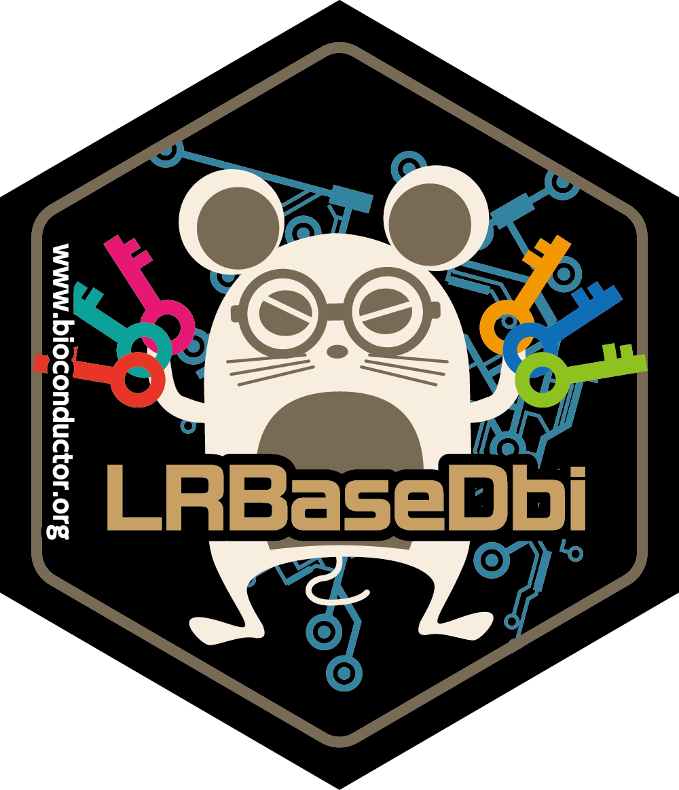
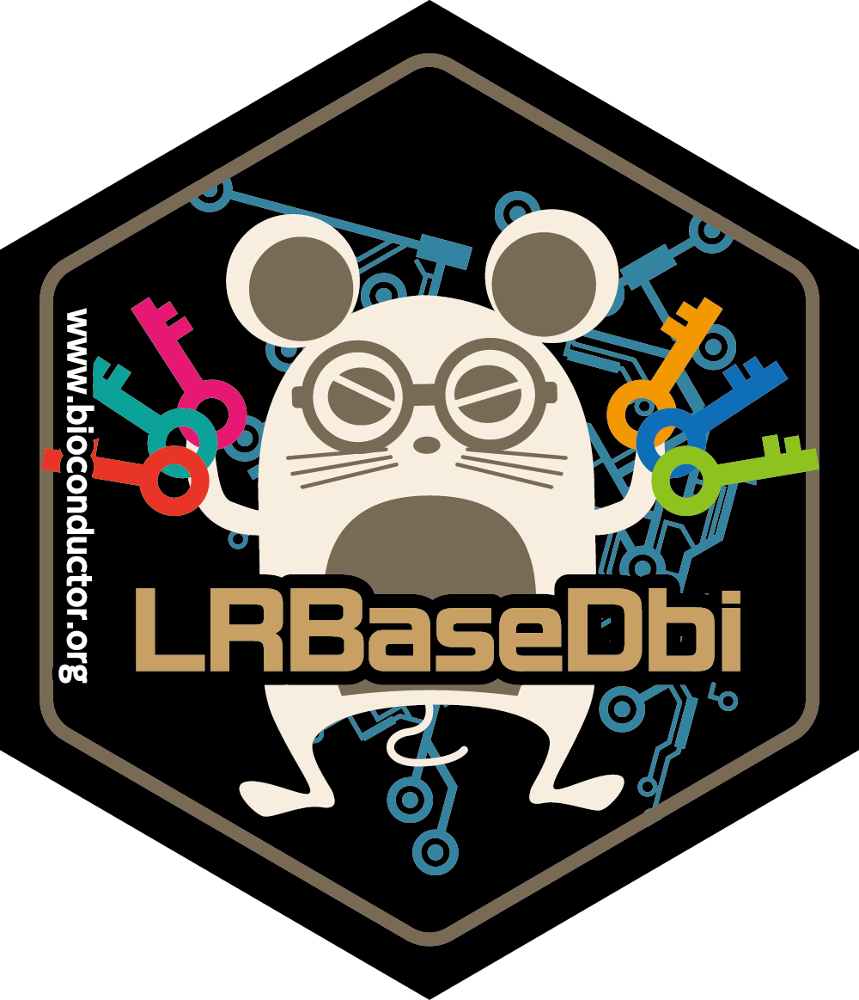

Description
In this workshop (presented in Japanese), you will learn how to detect cell-cell interaction from single-cell RNA-sequencing (scRNA-Seq) data using scTensor package. Moreover, you will learn some tensor frameworks of R language and will be able to freely use and decompose your original tensor data.
Expectation: In the first half, you will learn how to use SingleCellExperiment object, transform the scRNA-Seq data to higher-order tensor, and apply scTensor against it. In the latter half, you will learn some tensor-related R packages.
Pre-requisites: The course is aimed at PhD students, Master’s students, and third & fourth year undergraduate students. Some basic R knowledge is assumed - this is not an introduction to R course. If you are not familiar with the R statistical programming language it is compulsory that you work through an introductory R course before you attend this workshop.
Participation
After the lecture, participants are expected to follow along the hands-on session. we highly recommend participants bringing your own laptop.
R / Bioconductor / CRAN packages used
The following R/Bioconductor packages will be explicitly used:
List any R / Bioconductor / CRAN packages that will be explicitly covered.
- SingleCellExperiment (Bioconductor)
- AnnotationHub (Bioconductor)
- LRBaseDbi (Bioconductor)
- scTensor (Bioconductor)
- einsum (CRAN)
- rTensor (CRAN)
- nnTensor (CRAN)
- HDF5Array (Bioconductor)
- DelayedArray (Bioconductor)
- DelayedTensor (Bioconductor)
- mwTensor (CRAN)
Time outline
| Activity | Time |
|---|---|
| Cell-cell Interaction Analysis by scTensor | 20m |
| Advanced Topics about Tensor Arithmetic and Decomposition | 30m |
| Q & A | 10m |
To reproduce this workshop material
docker run -e PASSWORD=<choose_a_password_for_rstudio> -p 8787:8787 koki/sctensor-workshop:latestOnce running, access to http://localhost:8787/ and then login with rstudio:yourchosenpassword.
Or, you can launch workshop on the Orchestra cloud system. Visit http://app.orchestra.cancerdatasci.org, select “細胞間相互作用解析ワークショップ: Cell-cell Interaction Analysis Workshop”, and push the Launch Workshop botton.
License
Copyright (c) 2021 Koki Tsuyuzaki MIT License.